耶思！摩卡卡又去酒店報到嘍～哈哈
因為麻麻工作忙，很久沒去走走晃晃，恩客們都快轉檯啦！
今天為大家介紹當天點檯的客人－古代牧羊犬"Ｑ比"
(其實人家沒有要點,是我們自己坐過去的!XD)
話說才坐下，馬上就上演了古牧騎兵的戲碼－＞古代牧羊犬騎天兵.gif")
有圖有真相！.gif")
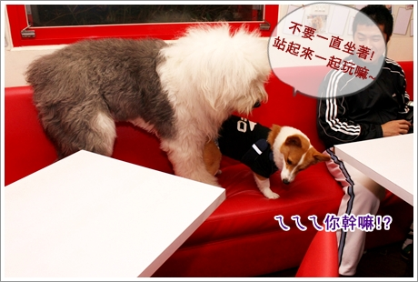
.gif") 人家Ｑ比其實沒有要騎摩卡卡啦！只是一直誤會他坐著
人家Ｑ比其實沒有要騎摩卡卡啦！只是一直誤會他坐著
純粹只是想把他抱起來一起玩啦！XDDDD

很少機會可以跟大捧油一起玩~
而且看到Q比的眼神覺得非常之熟悉，
那露出眼白的小眼睛不是摩卡卡的招牌嗎？
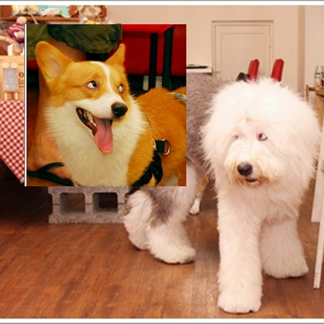
在開戰之前，Ｑ比被他麻麻叫過去吃飯！還套上了專用圍兜兜
套上 圍兜兜的Ｑ比，頭也太小顆了吧！
居然跟旁邊的摩卡卡差不多～傻眼！ （摩卡你的大頭戰績又記上一筆！）
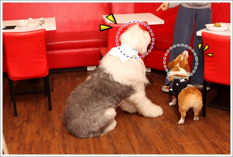
吃飽飽再度開戰啦！
這隻古代真的超靈活的，跟著卡卡在沙發跳上跳下的～根本是洪金寶嘛！
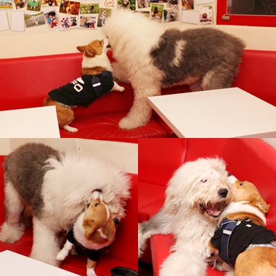
跟大個兒玩真的超HIGH的，
摩卡卡的大頭很常被夾在Ｑ比的胳肢窩裡！哈哈
雖然個頭大但Ｑ比才１歲，玩起來還是小幼幼的FU！
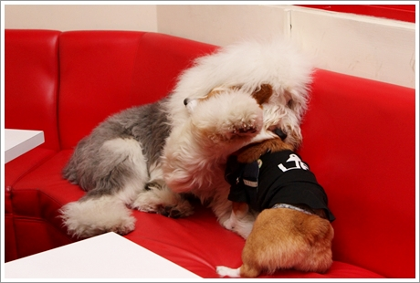
愈玩愈high，兩個大小傢伙開始狂嗑彼此的肥肉！.gif")
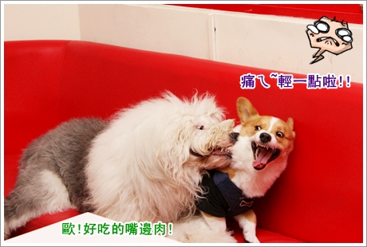
摩卡卡的強項，洗頭功！
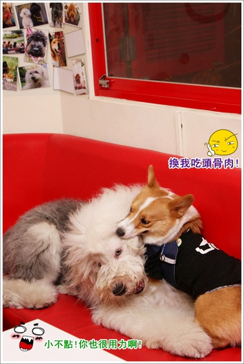
Ｑ比很喜歡跟小狗玩，但他麻麻說沒有小狗敢醬跟他玩！
摩卡卡是很難得遇到可以跟他玩瘋的小狗（跟古代比他算小狗啦！XD）
天兵是沒在怕的啦！
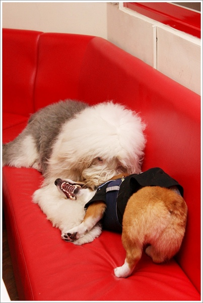
送完所有客人後，店狗苦力姆出來玩嘍！
好久好久沒看到苦力姆了說，摩卡卡也很開心
而且他今天有一個秘密法寶要來測驗苦力姆！XDDDD
（待會告訴你！）
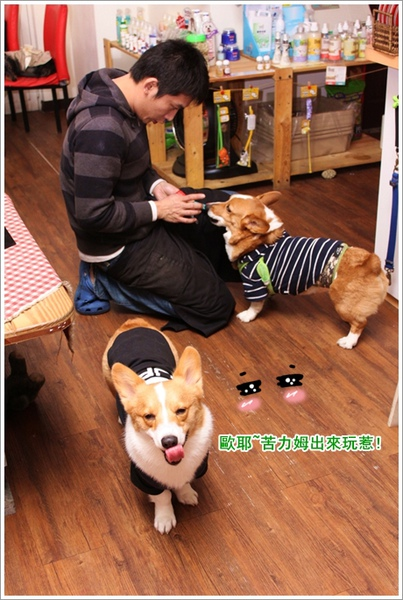
許久未見的KULIMU變得超級瘦的！
你們看看他的腰好細歐，整個小一號！大驚！
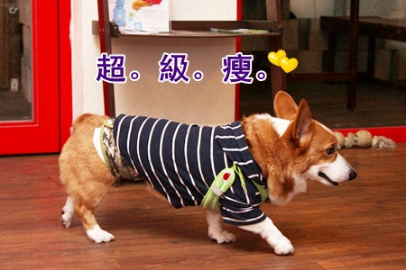
我覺得變瘦後的若力姆變得好柔歐！陽剛味少了點！哈哈
而且站都站不穩，弱不驚風啊！哈哈哈
但他阿木不喜歡，總覺得太不MAN惹~但我好喜歡啊!!精瘦..很帥呀!
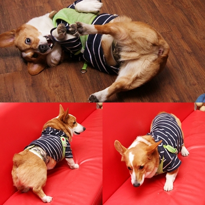
現在要來公布一下摩卡卡今天要用什麼法寶騙若力姆～哈哈
就是身上穿的黑Ｔ恤啦！上次去卡內家安親，卡ㄋㄟ麻送他的！
我洗都沒洗過，整件可還是充滿著卡ㄋㄟ的味兒呢!
（眾：怎嘛有種變態的FU！）
KULIMU一靠近就聞到他麻吉的味道了
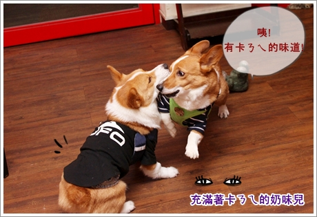
KULIMU：你不是卡ㄋㄟ！你不是卡 ㄋㄟ！
摩卡卡：我是啊我是啊！只是今天眼線畫比較淡啦！
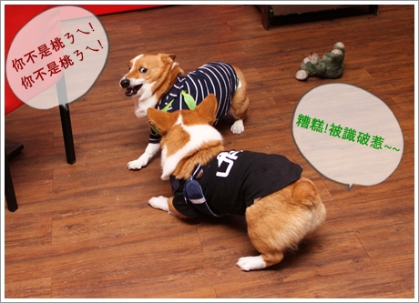
苦力姆抱著懷疑的眼神，試圖走近一點看個清楚！
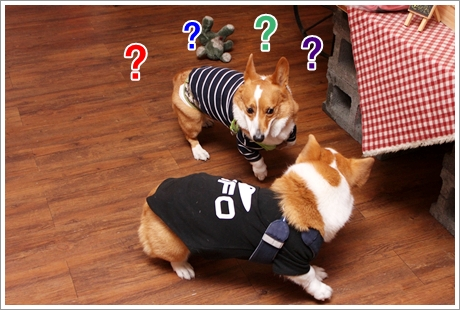
KULIMU： 咦！好像是真的耶！你是桃ㄋㄟ沒錯啦！
鑑定過後，KULIMU卸下心防，拿起心愛的瞎眼熊跟我們玩！
（眾：屁咧！最好是看不出來啦！）
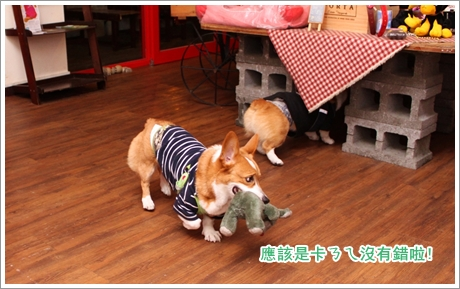
哈哈哈～那天穿著有卡ㄋㄟ味的衣服跟冰淇琳兄妹玩的很開心！
所以我決定了，這件衣服絕對絕對不下水！拿來招搖撞騙多好用啊！
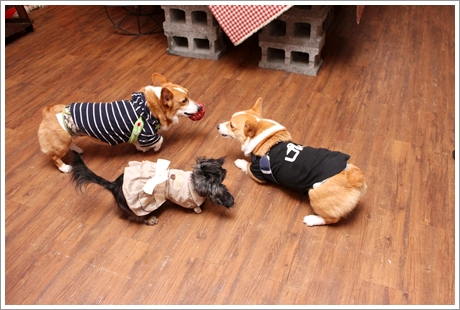
一向跟摩卡卡打的火熱的ICE，依然很跟摩卡卡很合得來！
整個頭都獻給卡卡了，只有她懂給摩卡卡洗頭有多舒服！
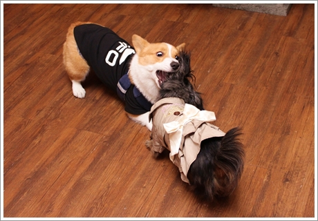
當然嘍！要推薦一下GOBAR今年推出的年菜 牛煲包 V.S 豬寶包
我們也預訂了準備要幫卡卡過年加菜！
現在已經可以開始預購嘍！有興趣的朋友可以點＞＞ 狗吧迎虎年年菜預購中